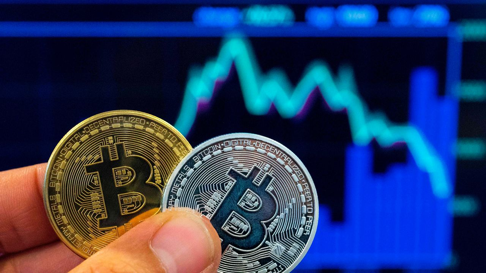
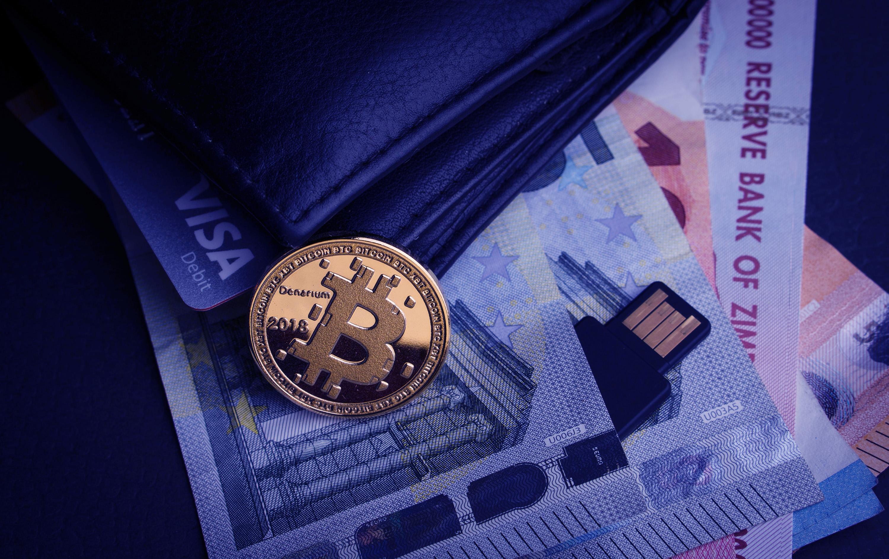

TECHNOLOGIN |
TECHNOLOGIN |
Where The Knowledge Begins
TECHNOLOGIN |Where The Knowledge Begins
In the end of 2020, we had another crushal news about coronavirus that, In UK ,A new variant of the coronavirus is spreading rapidly in England and raising international alarms. This new variant now accounts for more than 60% of the cases in London. And scientists say the variant is likely more contagious than previous versions of the virus.
5G networks are the next big thing in mobile internet connectivity with the speed of 100gbps. After almost a decade of development, it has finally become a reality in some areas. It offers an unprecedented transmission speed that far surpasses its predecessor, 4G. And since we’re talking gigabytes per second transfer rate, 5G is actually faster than virtually any home broadband available.5G can go as much as 100x faster than 4G.
With the UK ban on new petrol cars less than a decade away, the next 12 months are set to be the busiest ever for an industry accelerating towards an electric future. Here's our pick of 2021 EVs from A to V.

 A cryptocurrency (or crypto currency or crypto for short) is a digital asset designed to work as a medium of exchange wherein individual coin ownership records are stored in a ledger existing in a form of computerized database using strong cryptography to secure transaction records, to control the creation of additional coins, and to verify the transfer of coin ownership.It typically does not exist in physical form (like paper money) and is typically not issued by a central authority. Cryptocurrencies typically use decentralized control as opposed to centralized digital currency and central banking systems. When a cryptocurrency is minted or created prior to issuance or issued by a single issuer, it is generally considered centralized. When implemented with decentralized control, each cryptocurrency works through distributed ledger technology, typically a blockchain, that serves as a public financial transaction database.
A cryptocurrency (or crypto currency or crypto for short) is a digital asset designed to work as a medium of exchange wherein individual coin ownership records are stored in a ledger existing in a form of computerized database using strong cryptography to secure transaction records, to control the creation of additional coins, and to verify the transfer of coin ownership.It typically does not exist in physical form (like paper money) and is typically not issued by a central authority. Cryptocurrencies typically use decentralized control as opposed to centralized digital currency and central banking systems. When a cryptocurrency is minted or created prior to issuance or issued by a single issuer, it is generally considered centralized. When implemented with decentralized control, each cryptocurrency works through distributed ledger technology, typically a blockchain, that serves as a public financial transaction database.
 The first decentralized cryptocurrency, bitcoin, was created in 2009 by presumably pseudonymous developer Satoshi Nakamoto. It used SHA-256, a cryptographic hash function, in its proof-of-work scheme. In April 2011, Namecoin was created as an attempt at forming a decentralized DNS, which would make internet censorship very difficult. Soon after, in October 2011, Litecoin was released. It used scrypt as its hash function instead of SHA-256. Another notable cryptocurrency, Peercoin used a proof-of-work/proof-of-stake hybrid.
In cryptocurrency networks, mining is a validation of transactions. For this effort, successful miners obtain new cryptocurrency as a reward.
Visit the link below for information about minning.
A cryptocurrency wallet stores the public and private "keys" or "addresses" which can be used to receive or spend the cryptocurrency. With the private key, it is possible to write in the public ledger, effectively spending the associated cryptocurrency. With the public key, it is possible for others to send currency to the wallet.
 ₿21,000,000 :
The Supply of Bitcoin Is Limited to 21 Million
In fact, there are only 21 million bitcoins that can be mined in total. 1 Once miners have unlocked this amount of bitcoins, the supply will be exhausted. However, it's possible that bitcoin's protocol will be changed to allow for a larger supply.
₿21,000,000 :
The Supply of Bitcoin Is Limited to 21 Million
In fact, there are only 21 million bitcoins that can be mined in total. 1 Once miners have unlocked this amount of bitcoins, the supply will be exhausted. However, it's possible that bitcoin's protocol will be changed to allow for a larger supply.
 However, crypto trading expert Adam is largely optimistic about the future “These fluctuations are not going to be enough to slow it down. Bitcoin will likely break $50,000 in 2021.” The market trend is clear. Despite Bitcoin's variability, new bull cycles see the highs go higher and the lows get higher as well.